Material 3, tuned like Pixel Clock Bedtime mode. Phone mockups at 390 x 844, dashboard at 1440 x 900.
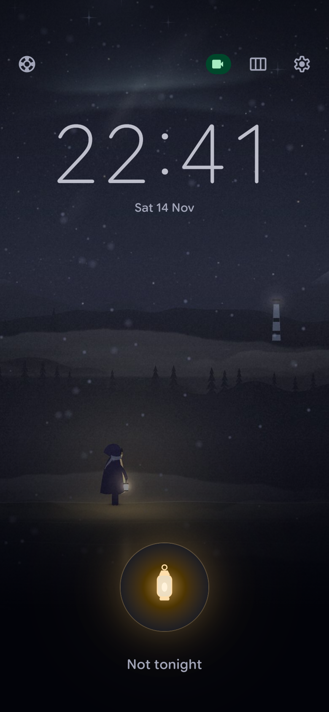
Start, night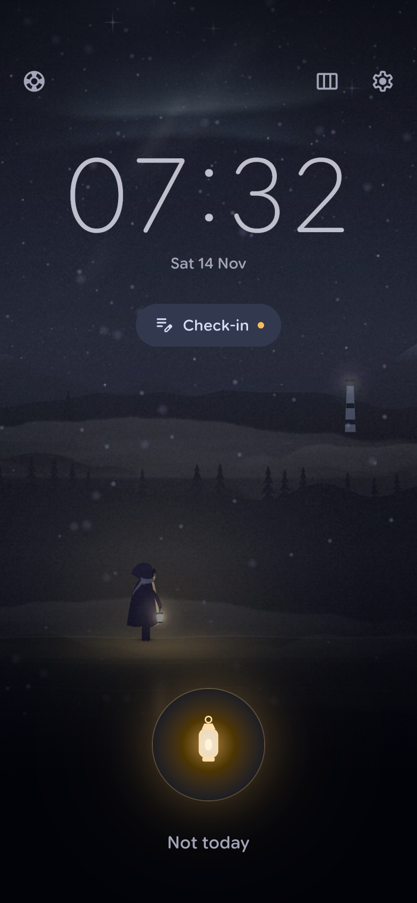
Start, morning with check-in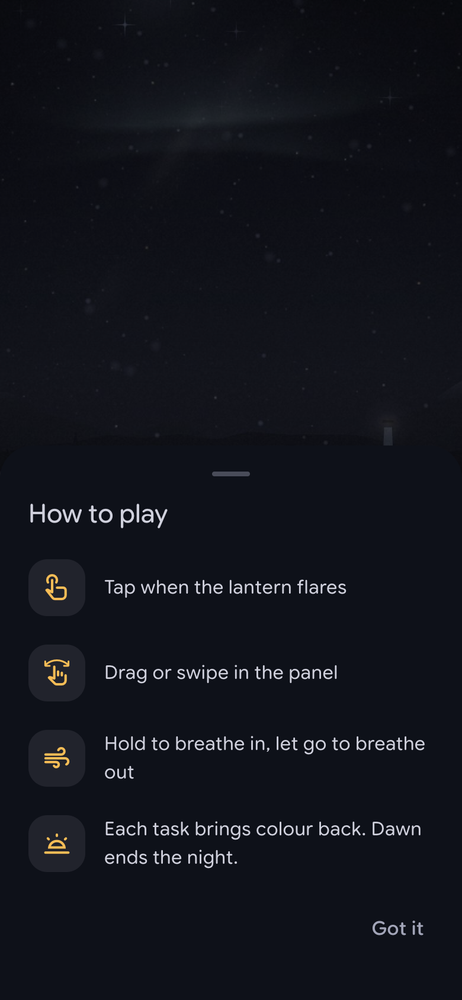
How to play (info sheet)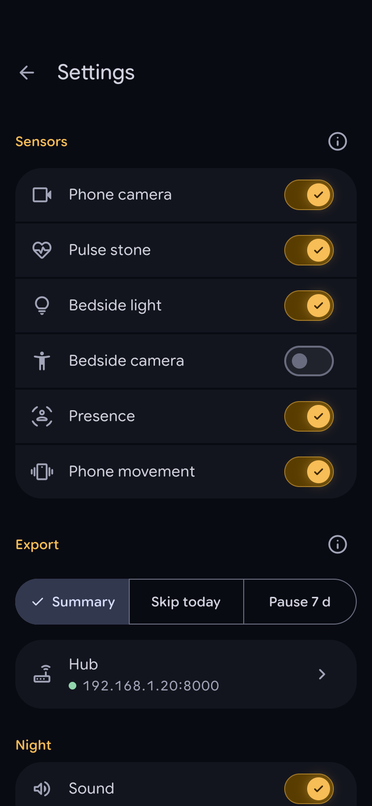
Settings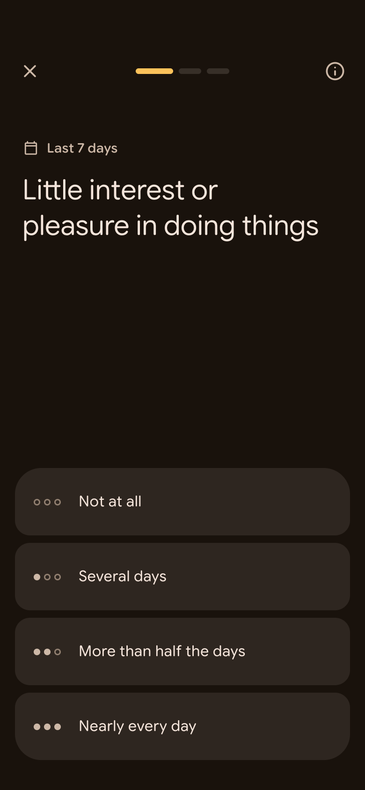
Question, unanswered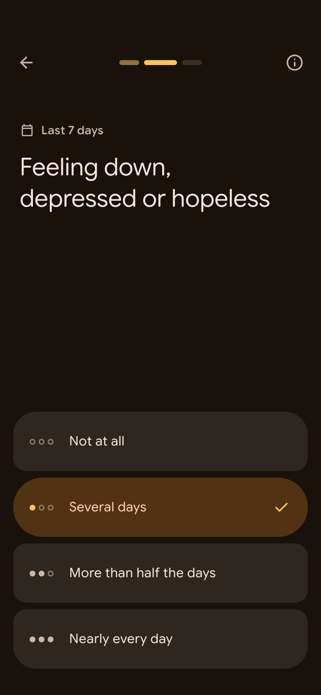
Question, answered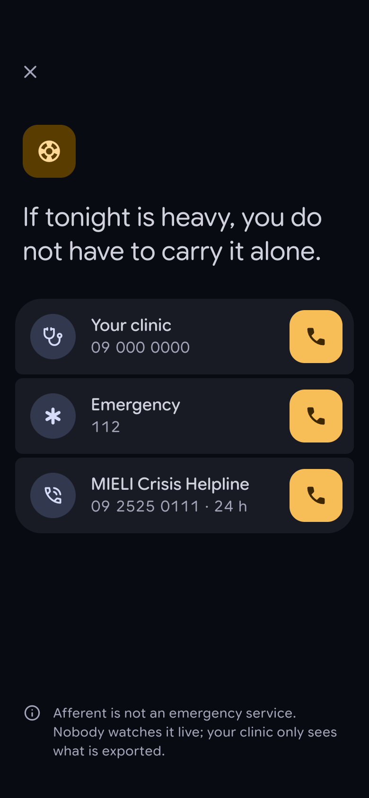
Talk to someone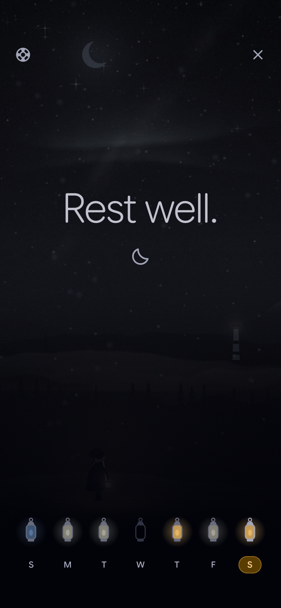
End, night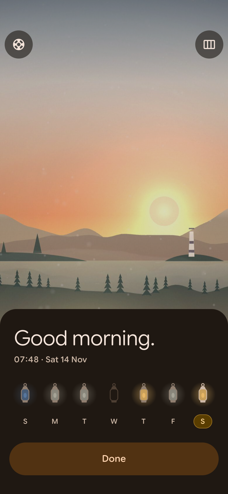
End, morningFell asleep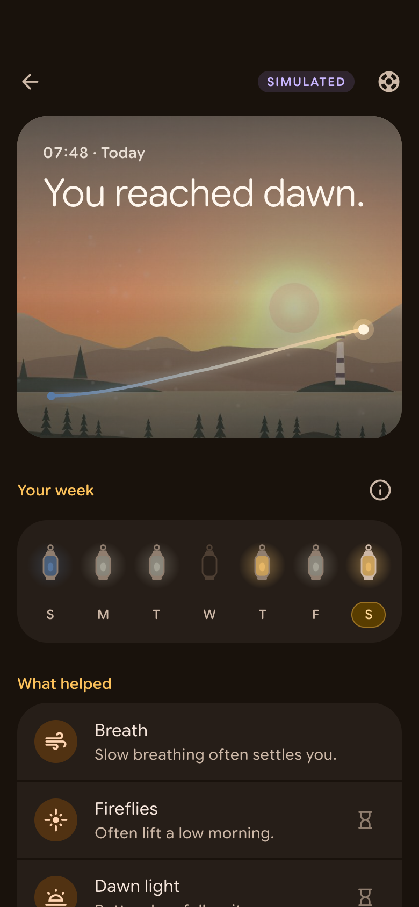
Patient view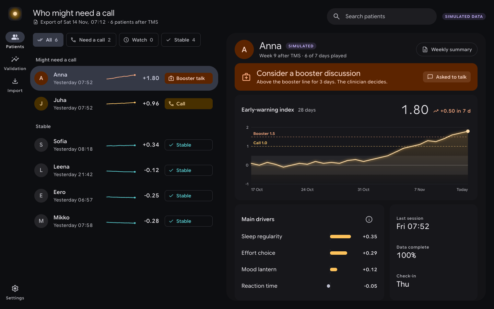
Clinic dashboard